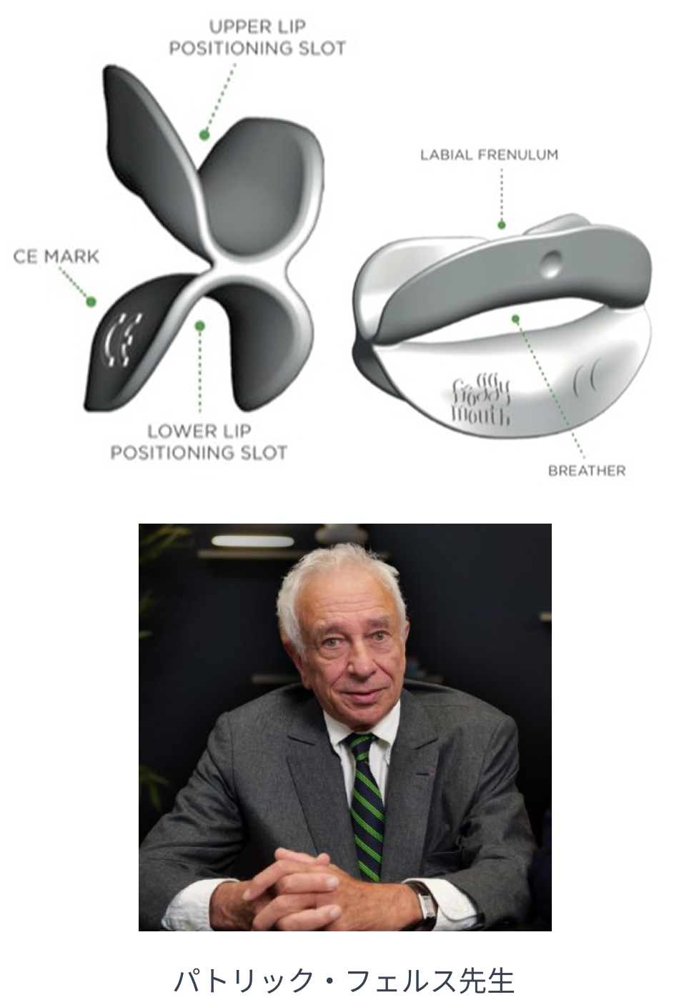

01
一日15分装着するだけで
一日15分装着するだけで
正常嚥下に変換できる
FroggyMouthとは（GCより発売予定）
Froggy Mouthはフランス小児矯正歯科学会名誉会長であるパトリック・フェルス先生が考案した新しいMFTデバイスです。
従来の筋肉トレーニングのMFTと異なり神経筋機能が自然に自動的に正しい嚥下習慣を獲得する事を目的に使用します。
歯列の狭小化や下顎の後退、過蓋咬合などの歯列不正の直接原因は乳児嚥下の残存による頬筋などの口腔前方周囲筋の異常緊張や舌位の問題から生じます。この乳児嚥下を成人嚥下に、簡単かつシンプルに改善するデバイスがFroggyMouthです。当院の測定では殆どの症例で乳児嚥下の特徴である強い頬筋圧が減少し、成人の後戻り防止や小児歯列拡大に大きな効果を得ています。
当日はフェルス先生による
日本語翻訳ビデオレクチャーを行います。